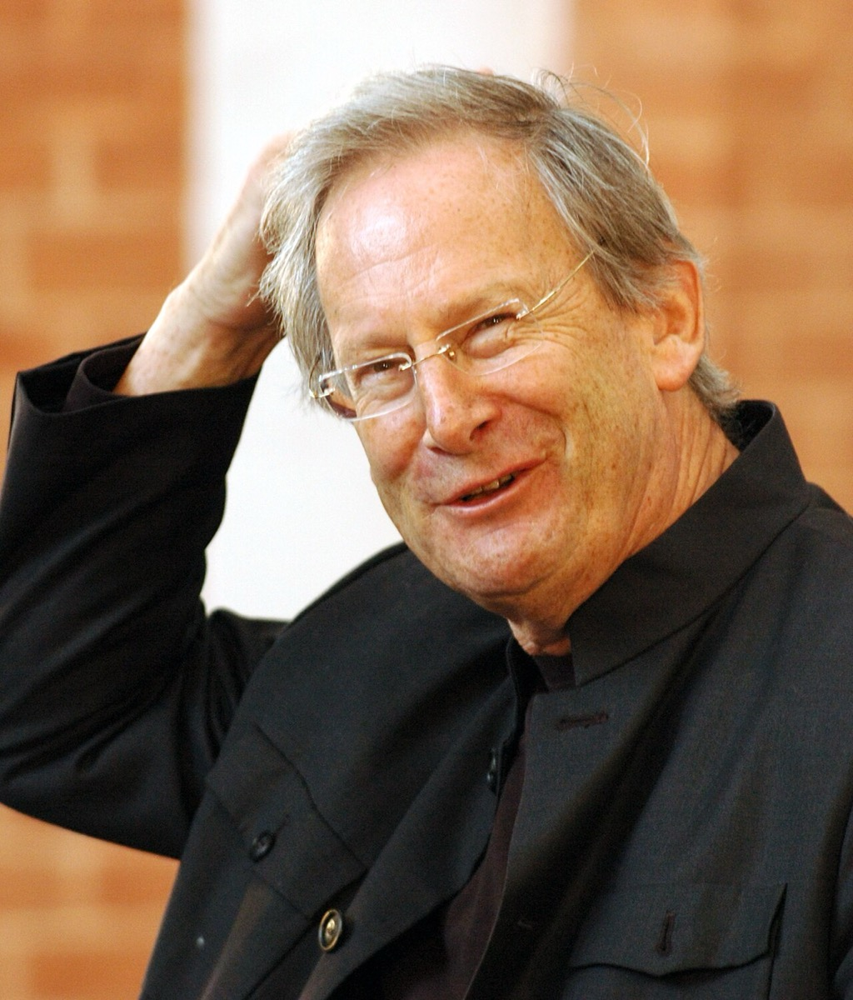

The Bach Cantata Pilgrimage: a year inside the machine

For the year 2000, the 250th anniversary of Bach's death, John Eliot Gardiner, the Monteverdi Choir, and the English Baroque Soloists undertook the maddest and most illuminating project of the modern Bach era. The idea can be stated in a sentence and staggers on inspection: perform all of the roughly 198 surviving sacred cantatas, each on its own liturgical date, across a single church year. Some sixty programs, in churches from Iona to Rome, from Weimar's Himmelsburg territory to New York for the final Christmas concerts — learning weekly, traveling weekly, performing weekly, for twelve months without pause. Anniversary years breed complete cycles; this was not one. A cycle presents the cantatas as a repertoire to be gotten through. The Pilgrimage was something categorically different: a year lived inside the machine that made them, the closest any modern musicians have come to inhabiting Bach's own working calendar — the relentless weekly rhythm of learn, rehearse, perform, move on, that had produced the works in the first place.
And the rhythm turned out to be a research instrument. Gardiner's journals from the year record the discovery that became the project's real finding: performed on their own days, the works explain themselves. Each cantata answers its Sunday's Gospel; each answers its season's light — the Advent expectancy, the post-Trinity long haul. Qualities that look like unevenness when the cantatas are heard shuffled resolve, in calendar order, into responsiveness: the music is not a set of freestanding pieces but a commentary keyed to a cycle, and it discloses its logic only to those who consent to live on its schedule. No edition or monograph could have demonstrated this. It took a year of doing it.
The project's business coda became legend, and deserves its place in the story. Partway through the year, Deutsche Grammophon dropped the recording contract — the completeness era's flagship project, cut loose mid-voyage by the industry that should have treasured it. Gardiner's response was pure Pilgrimage logic: he founded his own label and named it Soli Deo Gloria — Bach's own colophon, the "to God alone the glory" with which the cantor signed his scores, repurposed as a business imprint — and released the Pilgrimage himself: twenty-eight volumes, now this timeline's default cantata recommendation. There is a rhyme here the timeline cannot resist pointing out: like the cantor self-publishing his keyboard works into an indifferent marketplace, the conductor met institutional abandonment by becoming his own institution.
Thirteen years later came the book, Music in the Castle of Heaven — this project's most-cited modern source. It is the conductor's Bach rather than the scholar's: a portrait humanized by documentary honesty — the unruly schoolboy, the fractious employee — and made urgent by a lifetime of performance, a writer who has stood inside every chorus he describes. Where earlier biography tended to burnish, Gardiner lets the difficult man and the transcendent music coexist without apology, which is, not coincidentally, this timeline's own editorial policy.
In the arc's long argument about how this music should live now, the Pilgrimage is the fullest answer yet given. Not museum: nothing was embalmed; the performances were urgent, contemporary, alive to their rooms. Not modernization: nothing was updated or repackaged. The third way is best called re-inhabitation — taking the music's original conditions seriously enough to live in them for a while, and letting the works teach from inside. It is why Gardiner threads this whole site: the catalog recommendations, the era epigraphs, the Himmelsburg's very name. And it is why this study companion's cards carry liturgical dates at all. The Pilgrimage proved the cantatas are a calendar, not a catalog — and the timeline's dated ribbon is, in part, its debt.
Continue with the era essay: The Living Bach: 1850–present, or see completeness become the baseline: the completeness era.
SDG Pilgrimage documentation; Gardiner, Music in the Castle of Heaven
→ full bibliography & links